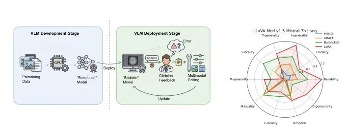
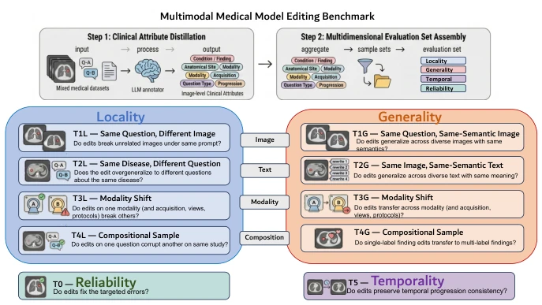
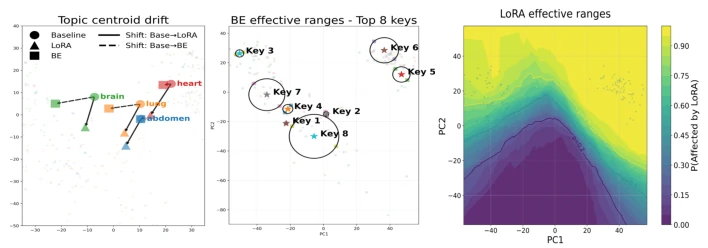
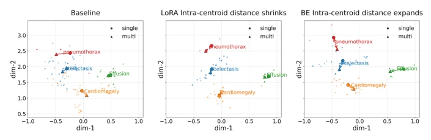
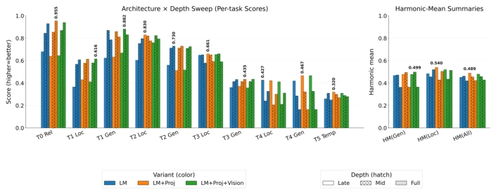
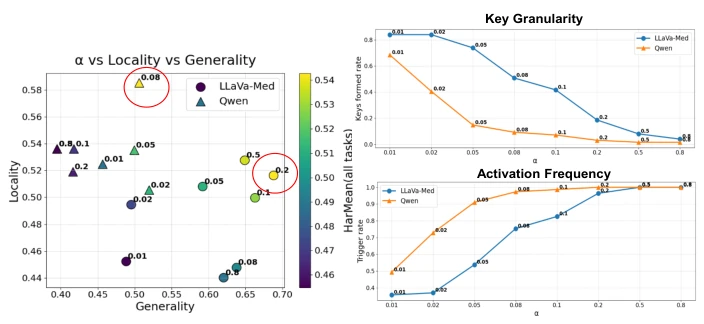
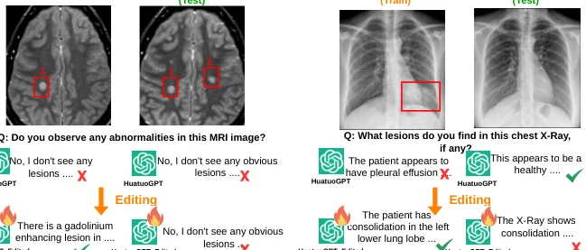
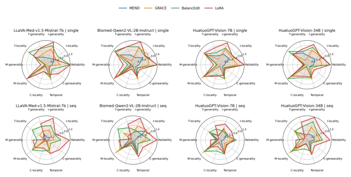
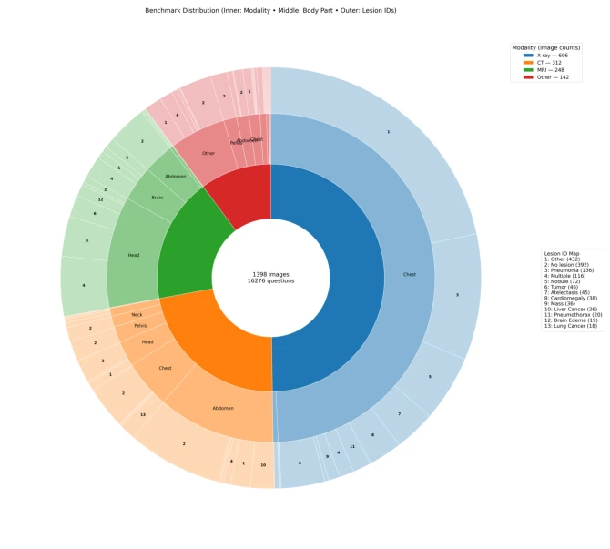

This paper casts a shadow over "model editing" for medical VLMs. The authors constructed the M3Bench benchmark, finding that existing editing methods are all "specialists in one subject" in clinical scenarios. Gradient-based methods (e.g., LoRA) have strong generalization but high destructiveness, while memory-based methods (e.g., BalancEdit) preserve locality but cannot handle combinations and temporal sequences. Most critically, it points out that the "latent space cone effect" leads to concept entanglement, where editing is like changing people in a crowded elevator, easily injuring neighbors. Although the benchmark is open-sourced, it is still far from clinical safe deployment; do not expect that relying solely on editing can solve all post-deployment errors. Existing evaluations are overly simplified and cannot reflect the complexity of real medicine; this work fills the gap in clinical-oriented evaluation, but technical bottlenecks remain obvious.
Medical VLMs inevitably make errors after deployment; full retraining is costly and prone to catastrophic forgetting [26]. Although model editing can correct specifically, existing benchmarks are mostly based on general tasks [23, 29], ignoring clinical complexity. For example, the "generalization" of existing evaluations only uses noise perturbation, unable to reflect real changes under different patients or scanning protocols. Clinical scenarios require editing to remain reliable under image/text changes, modality transfer, and multi-label combinations, and need to maintain temporal consistency. Existing work does not cover these dimensions, causing editing methods to potentially fail or even cause medical accidents in real medical environments; there is an urgent need for a clinical-oriented evaluation system.

Fig. 1: Post-deployment workflow and model editing performance. (a) Post- deployment workflow of multimodal model editing with clinician-in-the-loop feedback. Left: model development stage with extensive model training. Right: model deployment stage with lightweight and targeted model editing to correct errors on the fly. (b) Editing performance radar (sequential-edit) summarizing performance across our M3Bench evaluation dimensions for LLaVA-Med-v1.5-Mistral-7b.
The core is constructing the M3Bench benchmark and geometric analysis. Data construction is divided into two steps: first distill clinical attributes (anatomy, modality, etc.) using LLM, then assemble 16,276 questions by variable isolation. Evaluation covers 10 tasks, including reliability, locality, generalization, and novel temporal consistency. In terms of methods, the authors not only tested gradient-based (LoRA, MEND) and memory-based (GRACE, BalancEdit), but also proposed the BELoRA hybrid architecture. Through PCA analysis of latent space geometry, it was found that medical concepts are concentrated within a narrow "cone". Editing is interpreted as latent space deformation: gradient methods cause global drift destroying locality, memory methods rely on binary activation radius to limit scope but struggle to handle overlapping concepts. BELoRA attempts to combine both, but temporal and combination tasks remain difficult. Additionally, the study further explored the impact of editing location, finding that modifying later layers in LM is more effective than the visual encoder. Hyperparameter sensitivity analysis revealed the non-generalizability of memory-based methods across different Backbones; radius parameters need calibration for specific models. The overall process from data distillation to geometric attribution forms a complete editing evaluation and understanding framework.

Fig. 2: Construction pipeline of our proposed Multimodal Medical Model Editing Benchmark (M3Bench). We define 10 clinically grounded evaluation tasks spanning multiple dimensions of reliability, locality, generality, and temporality.

Fig. 5: Left: LoRA edits move all topic centroids of intended (Brain and Lung) and unintended targets (Abdomen and Heart), where BE restricts movement almost en- tirely to the edited topics. Middle: BE strictly restricts it edit activation regions by setting a binary decision sphere. Right: LoRA fix targeted errors by broadly warping representations, and this global reshaping inevitably collides with neighboring clinical concepts.

Fig. 6: Composition probe: single- vs. multi-finding geometry under editing. PCA visualization of embeddings for four diseases, where circles denote single-finding cases and triangles denote multi-finding cases. Single and multi cases heavily overlap pre-edit, indicating concept entanglement. LoRA tends to reduce the single–multi cen- troid gap, whereas BalancEdit often increases the gap.

Fig. 7: Architecture sweep using BELoRA over varying model components and depths. Left: Task-wise results. Right: Harmonic mean of generality tasks, lo- cality tasks, and all tasks.

Fig. 8: Left: Different backbones have different optimal points (highest overall score marked by red circle), and the same hyperparameter may have opposite effects in differ- ent backbones. Right: Extremely low or high radius result in degraded performance.

Fig. 9: BE Failed Cases for T4-G and T5 on Huatuo34B.
Tested 4 editing methods on 4 medical VLMs and 2 general VLMs. Metrics include accuracy, locality destruction rate, etc., calculating 10-task harmonic mean. Results show no method is perfect: LoRA has high reliability but locality collapse (T-locality only 0.03), BalancEdit is overall balanced but poor combination generalization. Ablation experiments show editing location in later LM layers is best, visual encoder editing yields no gain. Hyperparameter sensitivity analysis shows memory method radius parameters are not generalizable across different Backbones, need recalibration. Temporal and combination tasks remain the shortcoming of current editing technology, proving the limitations of existing methods in complex clinical scenarios.

Fig. 3: Radar plot summarizing single and sequential editing performance across 10 tasks and 4 medical VLM backbones. General VLM results in Appendix.

Fig. 10: Benchmark distribution (inner ring: modality; middle ring: body part; outer ring: lesion IDs). Center reports global counts (#images, #questions).